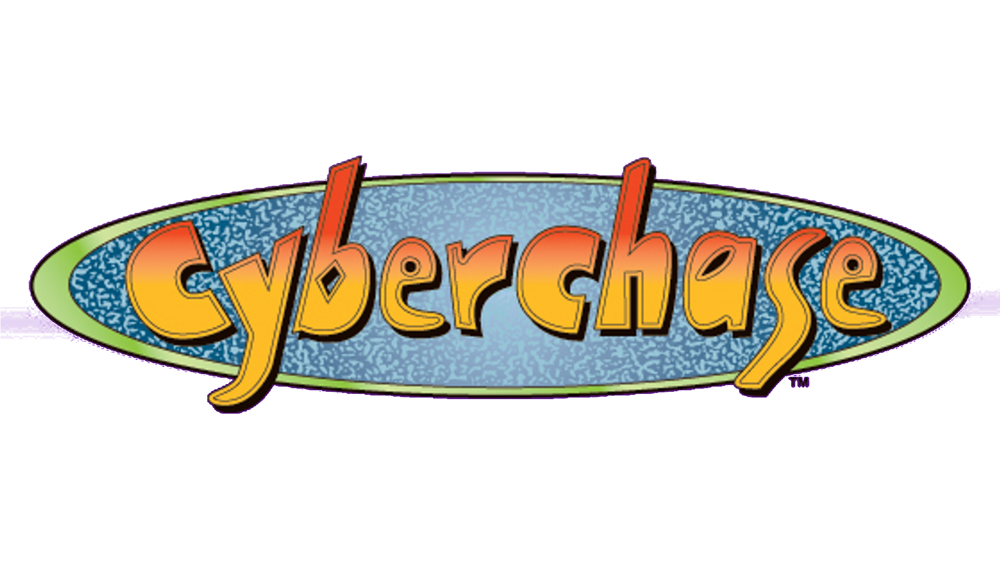
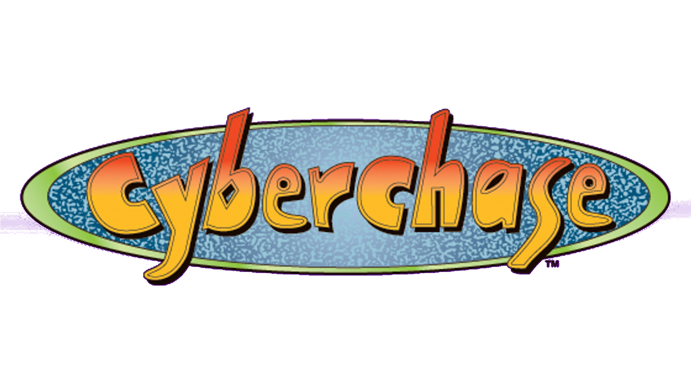

Descrição:
Nino é um garoto de 300 anos que vive com seu tio, o Dr. Victor, um feiticeiro e cientista,
e com sua tia-avó Morgana, uma feiticeira de 6.000 anos de idade.
Os três moram em um castelo em algum bairro implícito na cidade de São Paulo.
Aprendiz de feiticeiro, Nino nunca frequentou uma escola, por causa da idade nada comum de 300 anos.
Seus pais o deixaram morando com Victor e Morgana, porque
precisavam viajar numa expedição no espaço sideral, levando seus dois irmãos mais novos.
Apesar de ter amigos animais sobrenaturais no Castelo, Nino, sentindo falta
de amigos como ele, resolve fazer um feitiço que aprendeu com seu tio Victor, e acabou trazendo para o Castelo,
três crianças que tinham acabado de sair da escola.
Livre da solidão, Nino recebe a visita dos três diariamente, além das visitas especiais de um velho amigo seu,
o entregador de pizza Bongô; da charmosa repórter de TV, Penélope;
da lenda folclórica Caipora; e de um ET, o Etevaldo. Para preencher o lado maligno da história, está o Dr. Abobrinha,
um especulador imobiliário que deseja derrubar o Castelo e construir em seu lugar um prédio de cem andares.
Alguns personagens:
Curiosidade:
Devido ao seu caráter educativo, a produção fez parte da parceria entre Fiesp e TV Cultura,
tal como vários programas infanto-educativos da emissora.
Nos créditos, é possível ver os logotipos de: Fiesp, Sesi e Senai. Embora o programa
fosse voltado ao público de 3 a 8 anos em fase educacional, atingia uma massa de audiência entre 3 e 16 anos.
 



|